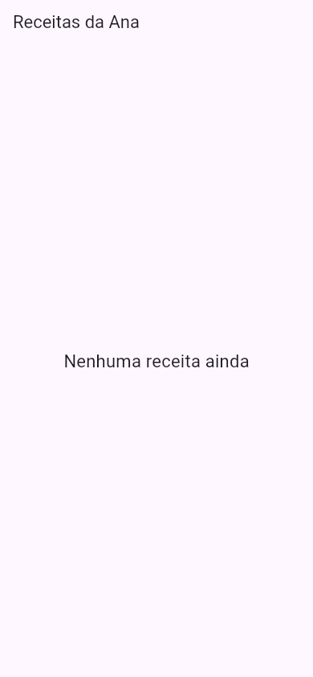
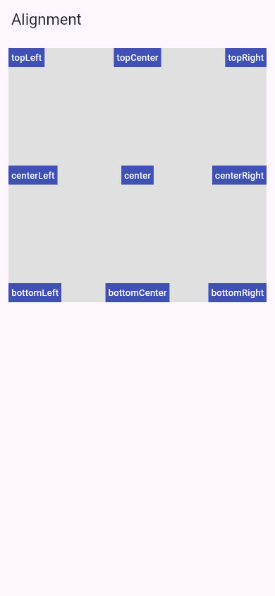
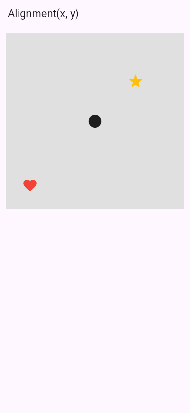
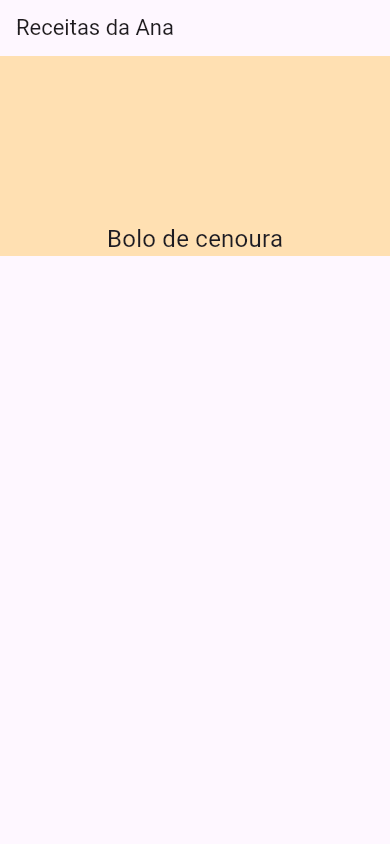
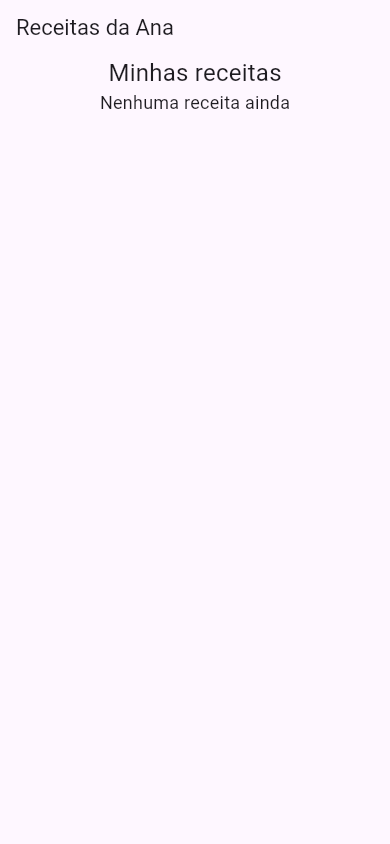

Flutter Center e Align
Você já viu que, sem ninguém dizer nada, um widget no body vai para o canto de cima, à esquerda. Para mandá-lo para outro lugar, existem dois widgets: o Center ("centro"), que põe o filho no meio, e o Align ("alinhar"), que põe o filho onde você quiser: num canto, no meio de um lado, ou num ponto qualquer. Os dois têm um filho só (child).
- Como o
Centercentraliza um widget no espaço que ele recebe. - Como o
Alignpõe o filho em qualquer um dos nove pontos doAlignment, cada um com a foto. - Como escolher um ponto qualquer com
Alignment(x, y), de -1 a 1. - O atalho
alignment:doContainer. - Por que o
Centerdentro de umaColumnnão centraliza na altura, e os erros comuns.
Todos os apps desta aula são um lib/main.dart completo, compilados pelo Flutter Flutter 3.47 do laboratório para a web e fotografados no navegador, em tamanho de celular (390 × 844).
A ideia: o quadro na parede, de novo
A Ana vai pendurar um quadro numa parede vazia. Primeiro ela olha o tamanho da parede; depois decide onde o quadro vai: bem no meio, no canto de cima à direita, um pouco acima do sofá. O Center e o Align fazem isso: eles ocupam a "parede" inteira (todo o espaço que o pai der) e penduram o filho no ponto escolhido.
1. Center: no meio
import 'package:flutter/material.dart';
void main() => runApp(const MeuApp());
class MeuApp extends StatelessWidget {
const MeuApp({super.key});
@override
Widget build(BuildContext context) {
return MaterialApp(
debugShowCheckedModeBanner: false,
home: Scaffold(
appBar: AppBar(title: const Text('Receitas da Ana')),
body: const Center(
child: Text('Nenhuma receita ainda', style: TextStyle(fontSize: 22)),
),
),
);
}
}
- Center(child: …)
- Ocupa todo o espaço do
body(da barra até o fim da tela) e põe o filho no meio dele, na horizontal e na vertical. - Text('Nenhuma receita ainda')
- O filho. Ele continua com o tamanho dele; quem muda é só a posição.

É a tela típica de "lista vazia". Repare que o meio é o meio do body, não da tela inteira: a barra do título não conta.
2. Align: os nove pontos
O Align recebe um alignment com o ponto onde o filho vai. Os valores prontos são nove, com nomes em inglês que combinam top/center/bottom (cima/meio/baixo) com Left/Center/Right (esquerda/meio/direita). Para ver os nove de uma vez, este app usa um Stack (aula Stack e Positioned) com nove Align dentro de um quadro cinza:
import 'package:flutter/material.dart';
void main() => runApp(const MeuApp());
class Etiqueta extends StatelessWidget {
const Etiqueta(this.alinhamento, this.nome, {super.key});
final Alignment alinhamento;
final String nome;
@override
Widget build(BuildContext context) {
return Align(
alignment: alinhamento,
child: Container(
color: Colors.indigo,
padding: const EdgeInsets.all(4),
child: Text(nome, style: const TextStyle(color: Colors.white, fontSize: 13)),
),
);
}
}
class MeuApp extends StatelessWidget {
const MeuApp({super.key});
@override
Widget build(BuildContext context) {
return MaterialApp(
debugShowCheckedModeBanner: false,
home: Scaffold(
appBar: AppBar(title: const Text('Alignment')),
body: Container(
height: 360,
margin: const EdgeInsets.all(12),
color: Colors.grey.shade300,
child: const Stack(
children: [
Etiqueta(Alignment.topLeft, 'topLeft'),
Etiqueta(Alignment.topCenter, 'topCenter'),
Etiqueta(Alignment.topRight, 'topRight'),
Etiqueta(Alignment.centerLeft, 'centerLeft'),
Etiqueta(Alignment.center, 'center'),
Etiqueta(Alignment.centerRight, 'centerRight'),
Etiqueta(Alignment.bottomLeft, 'bottomLeft'),
Etiqueta(Alignment.bottomCenter, 'bottomCenter'),
Etiqueta(Alignment.bottomRight, 'bottomRight'),
],
),
),
),
);
}
}

Alignment, cada etiqueta no seu ponto do quadro cinza.| Left (esquerda) | Center (meio) | Right (direita) | |
|---|---|---|---|
| top (cima) | topLeft | topCenter | topRight |
| center (meio) | centerLeft | center | centerRight |
| bottom (baixo) | bottomLeft | bottomCenter | bottomRight |
Missão: o botão de "nova receita" deve ficar no canto de baixo, à direita da tela. Troque o alignment do Align.
import 'package:flutter/material.dart';
void main() => runApp(const MeuApp());
class MeuApp extends StatelessWidget {
const MeuApp({super.key});
@override
Widget build(BuildContext context) {
return MaterialApp(
debugShowCheckedModeBanner: false,
home: Scaffold(
appBar: AppBar(title: const Text('Receitas da Ana')),
body: const Padding(
padding: EdgeInsets.all(16),
child: Align(
alignment: Alignment.topLeft,
child: Icon(Icons.add_circle, size: 64, color: Colors.deepPurple),
),
),
),
);
}
}
import 'package:flutter/material.dart';
void main() => runApp(const MeuApp());
class MeuApp extends StatelessWidget {
const MeuApp({super.key});
@override
Widget build(BuildContext context) {
return MaterialApp(
debugShowCheckedModeBanner: false,
home: Scaffold(
appBar: AppBar(title: const Text('Receitas da Ana')),
body: const Padding(
padding: EdgeInsets.all(16),
child: Align(
alignment: Alignment.bottomRight,
child: Icon(Icons.add_circle, size: 64, color: Colors.deepPurple),
),
),
),
);
}
}
3. Um ponto qualquer: Alignment(x, y)
Os nove nomes são atalhos para números. Por dentro, um Alignment é um par (x, y), em que:
xvai de -1 (borda esquerda) a 1 (borda direita), com 0 no meio;yvai de -1 (borda de cima) a 1 (borda de baixo), com 0 no meio.
(-1,-1) ────── (0,-1) ────── (1,-1) │ │ │ (-1, 0) ────── (0, 0) ────── (1, 0) │ │ │ (-1, 1) ────── (0, 1) ────── (1, 1)
Então Alignment.topLeft é Alignment(-1, -1), Alignment.center é Alignment(0, 0) e Alignment.bottomRight é Alignment(1, 1). Com números, você escolhe qualquer ponto intermediário:
body: Container(
height: 360,
margin: const EdgeInsets.all(12),
color: Colors.grey.shade300,
child: const Stack(
children: [
Align(alignment: Alignment(0, 0), child: Icon(Icons.circle, size: 32)),
Align(alignment: Alignment(0.5, -0.5), child: Icon(Icons.star, size: 32, color: Colors.amber)),
Align(alignment: Alignment(-0.8, 0.8), child: Icon(Icons.favorite, size: 32, color: Colors.red)),
],
),
),

O círculo, em (0, 0), está no meio do quadro. A estrela, em (0.5, -0.5), está a meio caminho entre o meio e o canto de cima à direita. O coração, em (-0.8, 0.8), está quase no canto de baixo à esquerda, mas não encostado (encostado seria -1, 1). Repare que é o ícone inteiro que se alinha: em (1, 1), a borda de baixo à direita do ícone encostaria na borda do quadro, sem sair dele.
4. O atalho do Container
O Container tem um parâmetro alignment:, que faz o mesmo que embrulhar o filho num Align. É útil quando a caixa já tem cor ou tamanho:
body: Container(
height: 200,
color: Colors.orange.shade100,
alignment: Alignment.bottomCenter,
child: const Text('Bolo de cenoura', style: TextStyle(fontSize: 24)),
),

Formas diferentes de fazer
O Center é só um Align com o alignment já escolhido. Estas três escritas dão a mesma tela:
const Center(child: Text('Oi'))
const Align(alignment: Alignment.center, child: Text('Oi'))
Container(alignment: Alignment.center, child: const Text('Oi'))
| Quero… | Use |
|---|---|
| Um widget no meio | Center (o mais claro de ler) |
| Um widget num canto ou num ponto qualquer | Align(alignment: …) |
| Alinhar o filho de uma caixa que já tem cor/tamanho | Container(alignment: …) |
| Vários widgets no meio | Column/Row com mainAxisAlignment: MainAxisAlignment.center (aula Alinhamento), ou um Center em volta da Column com mainAxisSize: MainAxisSize.min |
| Um widget preso às bordas, a uma distância exata | Positioned dentro de um Stack (aula Stack e Positioned) |
Quando dá errado
Center não centralizou na altura!"
body: const Column(
children: [
Text('Minhas receitas', style: TextStyle(fontSize: 24)),
Center(child: Text('Nenhuma receita ainda', style: TextStyle(fontSize: 18))),
],
),

Center centralizou na largura, mas o texto ficou lá em cima, colado no título.Dentro de uma Column, cada filho recebe altura sem limite (a coluna não sabe quantos filhos ainda vêm). O Center não pode ocupar uma altura infinita, então fica da altura do filho, e "centralizar na altura" dentro de um espaço do tamanho do próprio texto não move nada. Na largura, ele tinha os 390 da tela, e centralizou (e, de quebra, deixou a coluna da largura toda, por isso o "Minhas receitas" também ficou no meio). A explicação completa está em Como o Flutter Calcula Tamanhos. Como consertar: para centralizar o resto da tela, embrulhe o Center num Expanded (ele passa a ter a altura que sobra): Expanded(child: Center(child: Text(…))).
children ao Center
body: const Center(
children: [Text('Bolo'), Text('Pudim')],
),
$ flutter build web
« (…)
lib/main.dart:15:11:
Error: No named parameter with the name 'children'.
children: [Text('Bolo'), Text('Pudim')],
^^^^^^^^
…/packages/flutter/lib/src/widgets/basic.dart:2569:9:
Info: Found this candidate, but the arguments don't match.
const Center({super.key, super.widthFactor, super.heightFactor, super.child});
^^^^^^
Error: Compilation failed.
Error: Failed to compile application for the Web.
"Não existe parâmetro com o nome children." O construtor do Center, que o compilador mostra, aceita só key, widthFactor, heightFactor e child (um filho). Como consertar: para centralizar vários widgets, ponha-os numa Column e a Column dentro do Center: Center(child: Column(mainAxisSize: MainAxisSize.min, children: [ … ])).
Referência rápida
| Escrita | O que faz |
|---|---|
Center(child: w) | Ocupa o espaço que tiver e põe w no meio |
Align(alignment: Alignment.topRight, child: w) | Põe w no ponto escolhido |
Alignment(x, y) | Um ponto qualquer; x e y de -1 a 1, (0, 0) é o meio |
Container(alignment: …, child: w) | O mesmo que um Align dentro da caixa |
Center(widthFactor: 2, child: w) | Em vez de ocupar tudo, fica com o dobro da largura de w (o mesmo para heightFactor) |
Exercícios
1. Qual Alignment é o mesmo que Alignment(1, -1)?
2. Quantos filhos o Center aceita?
3. Complete
Complete para o ícone ficar no meio da borda de baixo:
alignment: Alignment.,
child: Icon(Icons.home),
)
Missão final: a tela de lista vazia
Missão: a mensagem de "lista vazia" ficou no canto. Embrulhe o Text num Center para ela ficar no meio da tela.
import 'package:flutter/material.dart';
void main() => runApp(const MeuApp());
class MeuApp extends StatelessWidget {
const MeuApp({super.key});
@override
Widget build(BuildContext context) {
return MaterialApp(
debugShowCheckedModeBanner: false,
home: Scaffold(
appBar: AppBar(title: const Text('Lista de compras')),
body: const Text('A lista está vazia', style: TextStyle(fontSize: 22)),
),
);
}
}
import 'package:flutter/material.dart';
void main() => runApp(const MeuApp());
class MeuApp extends StatelessWidget {
const MeuApp({super.key});
@override
Widget build(BuildContext context) {
return MaterialApp(
debugShowCheckedModeBanner: false,
home: Scaffold(
appBar: AppBar(title: const Text('Lista de compras')),
body: const Center(
child: Text('A lista está vazia', style: TextStyle(fontSize: 22)),
),
),
);
}
}
Resumo
Centerocupa o espaço que o pai der e põe o filho no meio.Alignpõe o filho em qualquer ponto: os nove nomes (topLeft…bottomRight) ouAlignment(x, y)com números de -1 a 1.Centeré umAligncomAlignment.center; oContainertem o atalhoalignment:.- O
Centersó centraliza numa direção se tiver espaço nela: dentro de umaColumn, ele não tem altura para ocupar.